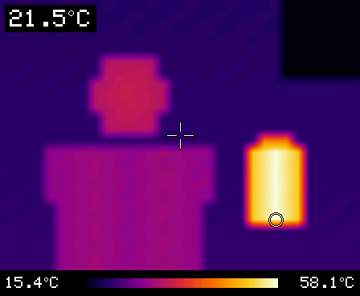
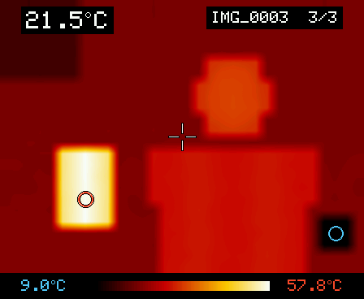
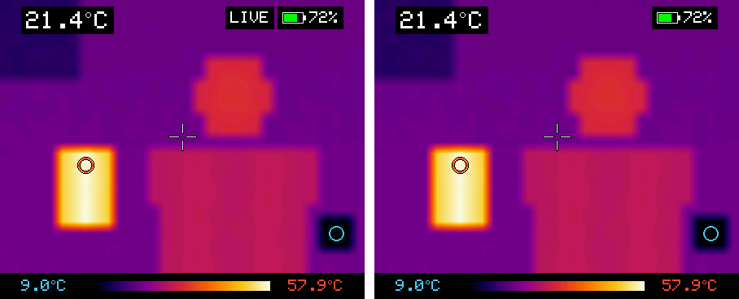
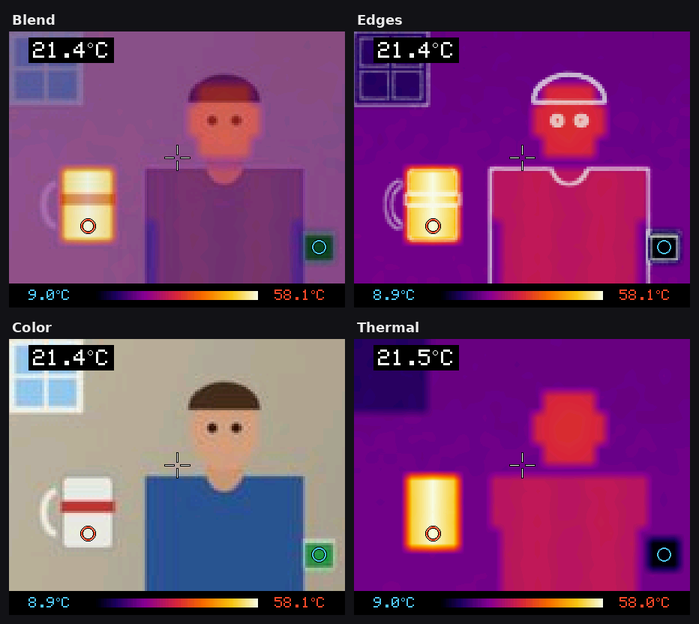

See heat in real time. Aim, read the temperature, save a picture, and watch it on a wireless second screen.
16 frames / s32 × 24 sensor°C / °FWireless screen

Waveshare ESP32-S3-Touch-AMOLED-1.8Wireless screen & color camera head
01Quick start
Point, read, save.
1 · Turn it on
Short-press PWR. The live picture appears after a moment.
2 · Aim
Point the sensor at what you want to measure and put it under the crosshair.
3 · Save
Short-press PWR again to save a picture to the microSD card.
Reading the screen
Rings follow the extremes. The red and blue rings sit on the hottest and coldest patch in view. They only move when another spot is clearly hotter or colder, so they don't jitter.
Smoothed, not slow. The picture refreshes 16 times a second and is gently smoothed, so readings stay steady while you aim. It still follows a moving object within about 0.1 s.
Thermal Camera · User guide02
02Controls
Two buttons and a touchscreen.
BOOT changes how the picture looks, PWR turns the camera on and saves pictures, and a sideways swipe switches between live view and saved pictures.
Live camera
BOOTshort press
Next color palette: Ironbow → Rainbow → Hot → White hot → Black hot
BOOThold ~1 s
Switch between °C and °F
PWRshort press
Save a picture to the microSD card. When the camera is off, this turns it on.
SWIPE →left to right
Open the picture viewer (newest picture first)
Picture viewer
TAPleft half
Previous (older) picture
TAPright half
Next (newer) picture
BOOTshort press
Previous (older) picture
← SWIPEorPWR
Back to the live camera
Anywhere
Long-press PWR to switch the board off. The power chip does this itself.
Tap the screen to keep the camera on during the auto-off countdown, or to wake a dark screen.
A wake-up touch or press does nothing else: no palette change, no picture.
Remembered settings
Your palette and °C/°F choice are kept after power-off.
Swipe tips
Swipe across at least a sixth of the screen, mostly sideways. Short, straight taps count as taps.
Thermal Camera · User guide03
03Palettes & units
Choose how heat looks.
Every palette maps the coldest thing in view to the left end of the bar and the hottest to the right. Press BOOT to step through them.
Ironbowdefault · all-round
Rainbowmost contrast
Hotwarm tones
White hotclassic grayscale
Black hotinverted grayscale
Hold BOOT for about a second to switch between °C and °F. The color scale always spans at least 3 °C, so sensor noise on a plain wall doesn't look like a rainbow.
04Saving pictures
One press, two files.
Put a FAT32 microSD card in the slot (cards of 32 GB or less come that way). Each short press of PWR saves into a thermal folder:
IMG_0001.bmp: the screen exactly as shown, with readings and color scale (448 × 368).
IMG_0001.csv: all 32 × 24 temperatures in °C, laid out like the picture. Opens in Excel or Numbers.
What you'll see
Top right briefly shows Saved IMG_0001. With no card it says No SD card.
Numbering carries on from the last picture, even after power-off.
Thermal Camera · User guide04
05Picture viewer
Look back at what you saved.
Swipe left to right on the live picture. The viewer opens on your newest picture and shows exactly what was on screen when you saved it.

The label at the top right shows the file name and its position: picture 3 of 3. Simulated screenshot.
Older
Tap the left half of the screen, or press BOOT.
Newer
Tap the right half of the screen.
Back to live
Swipe right to left, or press PWR.
Pictures live on the card in each board. On a wireless screen, the viewer browses the screen's own microSD card, not the camera's.
Thermal Camera · User guide05
06Wireless screen
A second screen, no router needed.
A second ESP32-S3-Touch-AMOLED-1.8 with no thermal sensor becomes a live wireless screen for the camera. The boards talk directly over ESP-NOW radio; expect about a room of range.

Left: the camera's display after a tap, with the LIVE badge showing a screen is watching (it stays dark otherwise). Right: the wireless screen, showing the same picture, palette, markers and readings. Simulated.
Set it up
Flash the same firmwareUse the same file on both boards. Nothing else to configure.
Leave the sensor off the second boardAt startup it finds no sensor and becomes a screen.
Turn both onThe screen shows Waiting for the thermal camera until the camera's picture arrives.
Good to know
Palette and °C/°F follow the camera. Change them on the camera.
PWR on the screen saves what it shows to the screen's own card.
While the screen watches, the camera's own display goes dark to save battery. Tap it or press a button to turn it on.
The camera only transmits while a screen is listening, and won't auto-off while one is.
With several cameras nearby, the screen stays with the first one it hears.
Both boards must use the same radio channel (channel 1 by default).
Thermal Camera · User guide06
07Wireless screen · standby
Turns on when the camera does.
When the camera switches off or goes out of range, the wireless screen waits a little, then goes dark. On battery it keeps listening in a low-power standby and comes back on by itself when the camera returns.
On battery
Goes into standby with the screen dark, waking briefly every 5 s to ask “is the camera on?”.
Tap the screen or press BOOT to turn it on straight away.
PWR works too, but is noticed at the next 5-second check.
After 30 minutes without the camera it powers off completely. Press PWR to turn it on.
On USB power
Only the display goes dark; the board keeps listening.
It lights up again the moment the camera's picture returns.
Tap the screen to wake it any time.
While browsing pictures
On the screen's picture viewer, the normal 60-second auto-off applies instead.
The camera's battery isn't affected. A sleeping screen's quick check gets one frame back, but doesn't count as someone watching, so the camera's own auto-off still works.
Thermal Camera · User guide07
08Camera · standby
Sleeps when the screen leaves.
While a wireless screen shows its picture, the camera never turns itself off, and its own display stays dark until you tap it. When that screen is switched off or goes out of range, the camera waits about 20 seconds, goes into standby, and turns back on by itself when you switch the screen on again.
On battery
Goes into standby, waking briefly every 5 s to listen for the screen.
Tap or BOOT: on straight away. PWR: at the next check.
After 30 minutes it switches off completely.
On USB power
The camera keeps running, with its display dark.
It streams again the moment a screen connects.
Using it on its own
Touch it or press a button after the screen leaves, and the normal 60-second auto-off applies.
When that runs out, it still waits in standby for the screen.
Two boards asleep? Wake either one. A sleeping camera only wakes for a screen that is switched on, so two boards in standby never keep waking each other. Tap or press a button on either board, and the other follows within a few seconds.
Standby uses some battery. The thermal sensor stays powered while the camera waits, so standby drains the battery faster than switching off. That's why it ends after 30 minutes.
Thermal Camera · User guide08
09Color camera head
Add color with a Heltec HT-HC33.
Solder the thermal sensor to a Heltec HT-HC33 camera board instead, and it becomes a small camera head with no screen. It sends the thermal picture and a color picture to the AMOLED board, which lays one over the other.
Wire the sensor
Sensor board
HT-HC33
VCC
3V3 · J2 pin 1
GND
GND · J2 pin 2
SDA
GPIO11 · J1 “SD_MOSI”
SCL
GPIO10 · J1 “SD_CS”
Or use GPIO16 (“SD_MISO”) for SDA and GPIO15 (“SD_CLK”) for SCL. The head tries both pairs, either way round. Check each pin on the board before soldering.
Leave the microSD slot empty. These pins are the slot's lines; the head uses them for the sensor.
Mount the sensor next to the lens. Point both the same way, as close together as you can, so the two pictures line up at every distance.
Don't use GPIO0 (the USER key), GPIO41 or the camera's pins.
Flash both boards
The HT-HC33Program ThermalCamHead-HT-HC33-full-flash-at-0x0.bin at 0x0 with esptool-js, as on page 14. If it won't connect, hold USER while pressing RST.
The AMOLED screenProgram the current ThermalCam-full-flash-at-0x0.bin. Older screen firmware ignores the color pictures.
Turn both onThe screen shows Waiting for the thermal camera until it hears the head, then the live picture.
The head
Press USER to switch it off; press again to turn it on.
It only transmits while a screen is listening.
About 20 s after the screen goes away it goes into standby, and comes back by itself when the screen does. After 30 minutes it switches off.
Problems (no sensor, camera failed) show on the screen's waiting page.
Thermal Camera · User guide09
10Thermal over color
Four ways to look.
Swipe up or down on the screen to step through the views. The screen remembers the last one.

Simulated: the screen firmware drawing the guide's made-up scene on a PC.
Blend
Thermal colors over the color picture
Edges
Thermal, with the color picture's outlines: shows what is hot
Color
The color picture, with the readings
Thermal
Thermal only; no color pictures are sent
With a head, BOOT on the screen sets the palette and °C/°F. PWR saves what the screen shows.
Line them up
Aim at something warm with clear edges, 1–2 m away.
Hold a finger still on the picture for about a second, until Align appears.
Drag to move the thermal picture over the color one.
BOOT zoom in · hold to zoom out.
PWR flip: none, mirror, upside down, both.
Tap to finish: Alignment saved.
Thermal Camera · User guide10
11Power & auto-off
Saves battery when you forget.
The camera counts as idle when nobody presses a button, touches the screen, or plugs in or unplugs USB. After a minute of that, it turns off.
On battery
The camera powers off completely. Press PWR to turn it back on. If a wireless screen was connected, it goes into standby instead and turns on with the screen.
On USB power
Only the screen turns off. Tap it, or press any button, to wake it. The waking press doesn't change the palette or save a picture.
Battery indicator
72%
Battery level, at the top right of the picture.
Lightning bolt
The battery is charging over USB-C.
“USB”
Running from USB with no battery connected.
Someone watching remotely keeps it on. While a wireless screen is showing the camera's picture, the camera doesn't auto-off.
Thermal Camera · User guide11
12Getting good readings
What the numbers mean.
A thermal camera reads the heat a surface gives off. Most surfaces behave the same way, but some don't, and it helps to know which.
Accuracy
About ±1–2 °C absolute. Readings settle after a few minutes of warm-up.
Readings assume an emissivity of 0.95, which is right for skin, wood, paint, plastic and food.
Shiny metal reads low
Polished metal reflects heat instead of giving it off, so it can read close to room temperature even when hot. This is normal for every thermal camera.
Fix: put a piece of matte tape on the metal and measure the tape.
Spot size
The sensor has 32 × 24 pixels. Small or distant objects cover only part of a pixel, so they read closer to the background temperature than they really are. Get closer for small targets.
Smoothing
Readings ease toward new values so they stay steady. Give the number a moment to settle after you move to a new target.
13Safety & privacy
This is a hobby thermal imager, not a medical instrument, fire alarm or electrical-safety tester. Never use its readings as the only basis for a health or safety decision.
The wireless link is unencrypted and unauthenticated. Anyone nearby with the right equipment can receive the picture (including the color camera head's color pictures), or pretend to be a camera or a screen. Don't use it for sensitive scenes.
Saved pictures on the microSD card are not encrypted. Wipe the card before you lend or give the device away.
Wire the sensor at 3.3 V with power disconnected, and keep its wires short.
Thermal Camera · User guide12
14Troubleshooting
If something's not right.
Black screen after flashingUnplug the board and plug it back in without holding BOOT. It won't run new firmware while it's still in flashing mode.
“No SD card” when savingUse a microSD card formatted FAT32 (32 GB or less). Push it in until it clicks.
“Sensor not found”The screen lists the I2C addresses it can see. Other devices but no 0x33: check the sensor's VCC/GND and that SDA/SCL aren't swapped. none: the wires aren't where the firmware expects them.
The camera says “Wireless screen”It didn't find its sensor at startup, so it became a screen. Check the sensor wires as above.
Wireless screen keeps waitingTurn the camera on. Keep both boards in the same room at first, and make sure both run the same firmware and radio channel.
A board in standby won't wakeAfter 30 minutes in standby a board switches off completely: press PWR. If both boards are asleep, wake either one and the other follows.
“Sensor stopped” after workingA loose wire, or a long or noisy cable. Keep the sensor wires short.
Checkerboard pattern on moving objectsThe shared I2C bus isn't keeping up. Lower SENSOR_REFRESH_HZ to 8 in config.h and rebuild.
Picture lags when you pan, or is jumpyLower SMOOTHING for a faster picture; raise it for a steadier one.
Swipes don't registerSwipe across at least a sixth of the screen, mostly sideways.
Text clipped in the cornersRaise SCREEN_CORNER_RADIUS in config.h.
Picture moves the wrong wayMount the sensor pointing away from you. If it still pans backwards, change MIRROR_IMAGE; if upside down, set SCREEN_ROTATION to 3.
Thermal Camera · User guide13
15Updating the firmware
Flash from your browser.
No software to install. Use the ready-made firmware file from the project's firmware folder, and flash the same file to the camera and to any wireless screen. The HT-HC33 color camera head has its own file (page 09).
Open esptool-jsGo to espressif.github.io/esptool-js in Chrome or Edge.
ConnectPlug in the board and click Connect. If no port appears, unplug, then hold BOOT while plugging it back in.
Program at 0x0Set the flash address to 0x0, choose the .bin file, and click Program.
RestartUnplug and replug the board, or press its power button.
Flashing the full image resets stored settings. Your palette and °C/°F choice go back to the defaults. Pictures on the microSD card are not touched.
Specifications
Item
Value
Sensor
MLX90640, 32 × 24 pixels, 55° or 110° view
Display
1.8″ AMOLED, 448 × 336 picture, landscape
Refresh
16 frames per second
Accuracy
about ±1–2 °C
Storage
microSD (FAT32): BMP + CSV
Wireless
ESP-NOW, about a room of range
Boards
Waveshare ESP32-S3-Touch-AMOLED-1.8, original and V2
Color head
Heltec HT-HC33 (optional)
Defaults you can change
Setting in config.h
Default
IDLE_OFF_SECONDS
60
SCREEN_LINK_TIMEOUT_SECONDS
20
CAMERA_DISPLAY_OFF_WITH_SCREEN
true
CAMERA_LINK_TIMEOUT_SECONDS
20
STANDBY_CHECK_SECONDS
5
STANDBY_MINUTES
30
WIRELESS_SCREEN
true
START_IN_FAHRENHEIT
false
SCREEN_BRIGHTNESS
200
Changing these needs an Arduino build; see the project README.